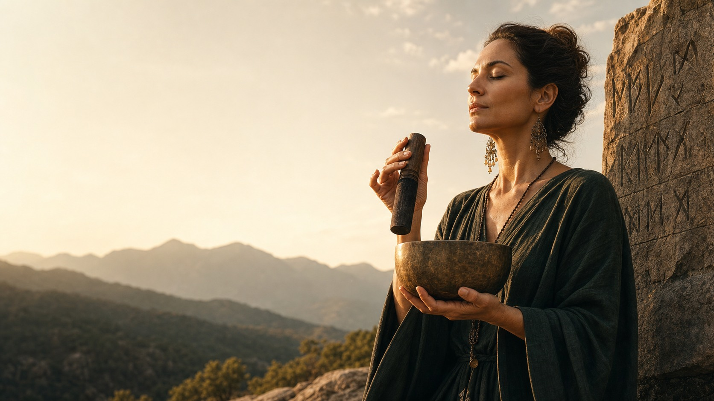

Восстановление организма и снижение воспаления
Антипаразитарные протоколы, детокс, восстановление ЖКТ, поддержка микробиома и работа с системным воспалением.
ВЕДАНИЕ
система восстановления человека
Пространство для тех, кто больше не хочет жить в режиме внутреннего истощения.
манифест
Человек привыкает:
И самое опасное — это начинает казаться обычной жизнью.
биологическая норма
С ясной головой.
С устойчивой психикой.
С глубокой энергией.
С ощущением внутренней тишины.
С живым контактом с собой.
Есть состояние, в котором человеку не нужно заставлять себя жить. Он просто чувствует жизнь.
среда XXI века
Современная среда буквально разрывает внимание человека на части. И постепенно вместе с этим уходят:

о проводнике
Меня зовут Наташа Сведовая.
Последние годы я исследую, что именно современная среда делает с человеком. Не только с телом, но и с нервной системой, уровнем энергии, психикой, состоянием лица и кожи, сексуальностью и способностью чувствовать жизнь глубоко.
Большинство людей пытаются «починить себя», не замечая, что сама среда вокруг ежедневно истощает организм.
самодиагностика
Отметьте, что уже стало частью вашей повседневности:
система
«ВЕДАНИЕ» — это не просто wellness-клуб. Это пространство постепенного возвращения человека к своему живому состоянию.
Система, в которой мы соединяем:
внутри пространства
Антипаразитарные протоколы, детокс, восстановление ЖКТ, поддержка микробиома и работа с системным воспалением.
Функциональное питание, восстановление энергии, работа с дефицитами, естественное омоложение и возвращение тонуса.
Практики раскрытия чувствительности, восстановление либидо, магнетизма и ощущения внутренней живости.
Йога, дыхательные практики, работа со стрессом, восстановление устойчивости и снижение внутреннего шума.
Закрытое сообщество, живые эфиры, мастермайнды, поддержка кураторов и движение к более сильному состоянию жизни.
выберите вход
Демо-доступ
Иногда человеку нужно впервые за долгое время почувствовать, как выглядит состояние, в котором организм начинает восстанавливаться.
Резидентство «ВЕДАНИЕ»
Настоящее восстановление должно быть системным: с поддержкой, маршрутами, практиками и живым пространством людей.
возвращение
Это постепенное возвращение человека к своему живому состоянию.
«Я больше не хочу жить в режиме внутреннего выживания».
И именно с этого начинается возвращение к себе.
Начать восстановление